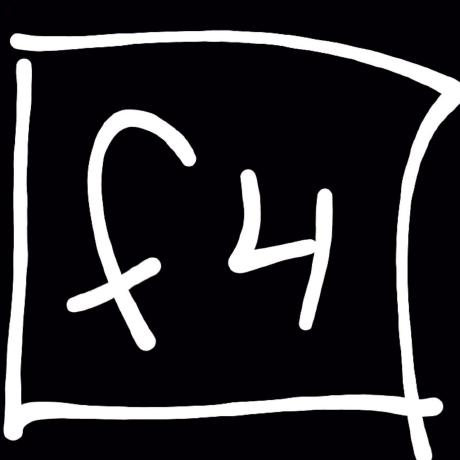
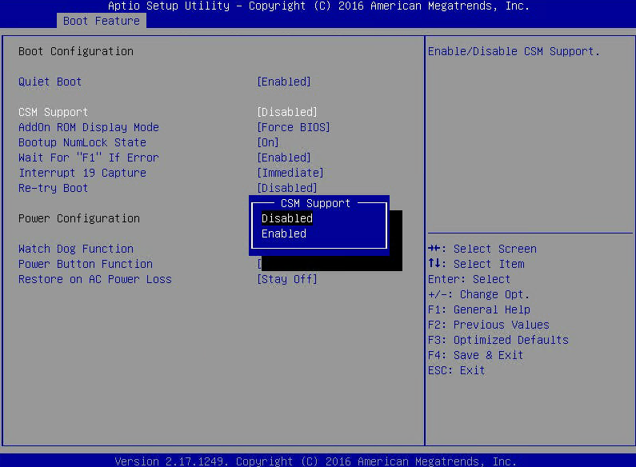
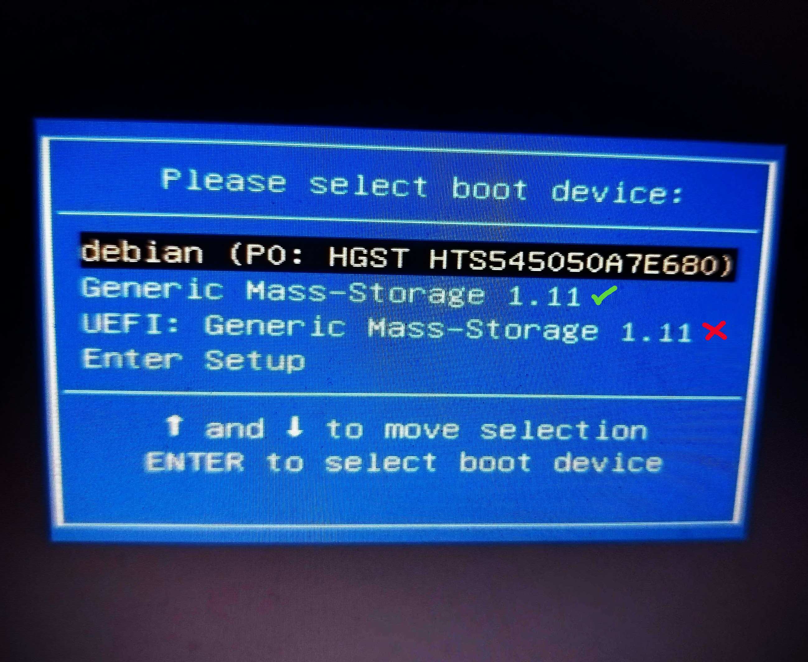

PRos is a minimalistic 16-bit operating system written in NASM for x86 architecture. It features a command-line interface, FAT12 file system support, and a rich set of system calls.
System Lightweight
Occupies < 200 KB on disk and optimized for 1.44 MB floppy disks.
Rich API
Provides interrupt-driven APIs for output, file operations, and string manipulation.
Educational
Ideal for learning OS development and low-level programming.
People behind the x16-PRos project — software creators, sponsors and helpers.
PRoX-dev
Lead developer. The creator of the kernel and the operating system itself, the terminal, drivers, API functions, multimedia, disk and graphics management, and almost the entire software package.
Qwez-dev
The creator of the game "Space Arcade" and build scripts for Windows.

Han Akbe sponsor
Corrected numerous typos in the project documentation, edited and improved the kernel code, provided valuable advice, , the developer of the standard C library (libc) for PRos, an active member of the community and also supported the project financially.
Ilnar Karazbaev sponsor
The creator of the MEMORY program, the developer of the standard C library (libc) for PRos, an active member of the community
Saeta
Pomg helped fix a serious file system API bug, and also created the first version of the OS calculator. Before creating the API, he developed a library with basic functions.
Loxsete
Barchart program creator. At the beginning of development, I helped with the kernel code.
Gabriel
Precentages program creator.
Andrey
Hex-edit program creator.
litvincode
v0.2 calculator creator
Green_Bushy - 1 024 RUB
tanushqn - 400 RUB
tomoko - 248 RUB
Vokich - 100 RUB
Running x16-PRos on Real Hardware
PRos is designed for 1.44 MB floppy disks but can also run from a USB flash drive. Follow these steps to set up PRos on real hardware. Use the .IMG image for persistent storage or the .ISO image for a live CD experience without saving changes.
Select the Device
Choose a USB flash drive or floppy disk to write the PRos system image. For USB drives, ensure the drive is formatted as FAT12. The .IMG image supports persistent changes, while the .ISO image is for temporary, live sessions.
Write the Image
Download the PRos system image (.IMG or .ISO) and use a tool like Rufus to burn it to your USB drive. Select your USB drive and the image in Rufus, then click START. Wait for the process to complete before safely ejecting the drive.
Configure BIOS for UEFI Systems
PRos relies on BIOS system calls and does not support UEFI directly. If your computer uses UEFI, enable Compatibility Support Module (CSM) in the BIOS settings. Enter the BIOS setup by pressing keys like F2 or DELETE during boot (check your motherboard manual for the exact key). Locate and enable CSM support.

Change DISABLED to ENABLED for CSM support.Access the Boot Menu
Restart your computer and enter the boot menu (typically using F8, F11, F12, or ESC). Select the USB drive option labeled "USB" (not "UEFI") to boot PRos.

Select your USB flash drive from the boot menu.Boot PRos
Press ENTER to start the boot process, which takes approximately 2–5 seconds. Upon first launch, you’ll see the PRos installation screen.
The initial installation screen for x16-PRos.
Running x16-PRos on Emulators
Emulators are ideal for developers and testers. PRos supports several emulators, with QEMU being the most straightforward option. Follow these steps to run PRos on QEMU.
Install QEMU
Install qemu-system-x86_64 or qemu-system-i386 using your package manager. For example, on Debian-based systems:
sudo apt install qemu-system-x86
# Or
sudo apt install qemu-system-i386
For Arch Linux with audio support, install the PulseAudio package:
sudo pacman -S qemu-audio-pa
Run PRos in QEMU
Launch PRos using the following command, ensuring you have the x16-PRos.img image file:
This command configures QEMU with audio support and boots the PRos image from a virtual floppy disk.
PRos Terminal Commands
The PRos Terminal is a powerful command-line interface for interacting with the OS, supporting commands for disk operations, program execution, and multimedia tasks.
Basic Commands
Command
Description
help
Display categorized command reference with navigation
info
Show system information and OS details
cls
Clear terminal screen
ver
Display PRos terminal version
exit
Exit to bootloader
System Information
Command
Description
cpu
Display detailed CPU information (family, model, cores, cache)
date
Show current date (DD/MM/YY format)
time
Show current time (HH:MM:SS format, UTC)
File Operations
Command
Syntax
Description
dir
dir
List files in current directory with size info
cat
cat <filename>
Display file contents
size
size <filename>
Show file size in bytes
del
del <filename>
Delete a file (kernel.bin protected)
copy
copy <source> <dest>
Copy file (root directory only)
ren
ren <old> <new>
Rename file (root directory only)
touch
touch <filename>
Create empty file
write
write <file> <text>
Write text to file
Text Processing
Command
Syntax
Description
grep
grep <file> <text>
Search for text in file with line/column highlighting
head
head <filename>
Display first 10 lines of file
tail
tail <filename>
Display last 10 lines of file
Directory Operations
Command
Syntax
Description
cd
cd <dirname>
Change directory (use .. for parent, / for root)
mkdir
mkdir <dirname>
Create new directory
deldir
deldir <dirname>
Delete empty directory
Media & Display
Command
Syntax
Description
view
view <file> [-upscale]
Display BMP image with optional 2x scaling
chars
chars
Display ASCII character table
theme
theme <name>
Change color theme (DEFAULT/GROOVYBOX/UBUNTU)
Power Management
Command
Description
shut
Shutdown system via APM
reboot
Restart system
API Documentation
x16-PRos provides a set of interrupt-driven APIs for developers, organized into three categories, each accessible via a specific interrupt:
INT 0x21: Output API - screen output, colors, cursor, and video mode control.
INT 0x22: File System API - FAT12 file management (list, load, write, delete, etc.).
INT 0x23: String Operations API - strings, input, time/date, cursor, conversions.
Each function is selected via the AH register. Input/output parameters use other registers (e.g., SI, AX, BX, etc.).
Unless specified, functions preserve all unused registers and set the carry flag (CF) on error.
Output API (INT 0x21)
Handles screen output in VGA 640×480 16-color mode. All text functions support newline (0x0A) → CR+LF.
Functions
Code (AH)
Description
Input
Output / Notes
0x00
Initialize Output System
—
Sets VGA mode 0x12 (640×480, 16 colors). No error reporting.
0x01
Print String (White)
SI = string pointer
Advances SI. Color: 0x0F.
0x02
Print String (Green)
SI = string pointer
Color: 0x0A.
0x03
Print String (Cyan)
SI = string pointer
Color: 0x0B.
0x04
Print String (Red)
SI = string pointer
Color: 0x0C.
0x05
Print Newline
—
Outputs 0x0D, 0x0A.
0x06
Clear Screen
—
Resets video mode (same as 0x00).
0x07
Set Text Color
BL = color code (0x00–0x0F)
Sets global color for 0x08.
0x08
Print String (Custom Color)
SI = string pointer
Uses color from 0x07. Advances SI.
VGA 16-Color Palette
Code
Name
Hex
0x00
Black
#000000
0x01
Dark Blue
#0000AA
0x02
Dark Green
#00AA00
0x03
Dark Cyan
#00AAAA
0x04
Dark Red
#AA0000
0x05
Dark Magenta
#AA00AA
0x06
Brown
#AA5500
0x07
Light Gray
#AAAAAA
0x08
Dark Gray
#555555
0x09
Blue
#5555FF
0x0A
Green
#55FF55
0x0B
Cyan
#55FFFF
0x0C
Red
#FF5555
0x0D
Magenta
#FF55FF
0x0E
Yellow
#FFFF55
0x0F
White
#FFFFFF
File System API (INT 0x22)
Manages files on a FAT12 disk (e.g. 1.44 MB floppy). Filenames must be in 8.3 format (e.g. FILE.TXT); case-insensitive (auto-converted to uppercase).
Functions
Code (AH)
Description
Input
Output / Notes
0x00
Initialize File System
—
Resets floppy controller. CF = error.
0x01
Get File List
AX = buffer pointer
BX:CX = total size (32-bit) DX = file count
Buffer: comma-separated, null-terminated list (e.g. FILE1.TXT,FILE2.BIN)
0x02
Load File
AX = filename CX = load address
BX = file size. CF = error (not found/disk).
0x03
Write File
AX = filename BX = data buffer CX = size (bytes)
Creates or overwrites file. CF = error.
0x04
Check if File Exists
AX = filename
CF clear = exists, set = not found/invalid.
0x05
Create Empty File
AX = filename
Fails if exists or root dir full. CF = error.
0x06
Remove File
AX = filename
Deletes entry, frees clusters. CF = error.
0x07
Rename File
AX = old name BX = new name
Both 8.3, case-insensitive. CF = error.
0x08
Get File Size
AX = filename
BX = size. CF = not found.
Limitations:
Root directory: max 224 entries.
File size: up to 32 MiB (FAT12), though some APIs use 16-bit size fields (≤64 KiB).
String Operations API (INT 0x23)
Utilities for strings, input, and system info. Null-terminated strings assumed.
Functions
Code (AH)
Description
Input
Output / Notes
0x00
Initialize API
—
No-op (reserved).
0x01
Get String Length
AX = string pointer
AX = length (excl. null).
0x02
Convert to Uppercase
AX = string pointer
In-place conversion ('a'–'z' → 'A'–'Z').
0x03
Copy String
SI = source DI = destination
Copies including null terminator.
0x04
Trim Spaces
AX = string pointer
Removes leading/trailing spaces in-place.
0x05
Compare Strings
SI = str1 DI = str2
CF set = equal, clear = not equal.
0x06
Compare (Limited)
SI, DI = strings CL = max length
CF = equality within limit.
0x07
Tokenize String
SI = string AL = delimiter
DI = token pointer (0 = none) SI advances past delimiter.
Modifies string (inserts 0 at delimiters).
0x08
Input String
AX = buffer pointer
Max 255 chars. Supports backspace. Ends on Enter (0x0D).
0x09
Clear Screen
—
Same as INT 0x21, AH=0x06.
0x0A
Get Time String
BX = buffer pointer
Writes HH:MM:SS (null-terminated).
0x0B
Get Date String
BX = buffer pointer
Writes MM/DD/YY, DD/MM/YY, or YY/MM/DD depending on global fmt_date.
Below are example programs demonstrating the use of PRos APIs, written in NASM for the 16-bit x86 architecture.
Hello, World
Description: A simple program to output a text string to the terminal.
[BITS 16]
[ORG 0x8000]
start:
mov ah, 0x01 ; API output print white string function
mov si, hello_msg ; String to output
int 0x21 ; Call the API function
ret ; Return to the terminal
hello_msg db 'Hello, PRos!', 10, 13, 0
Print Colored Strings
Description: A program to output the same string in multiple colors using different API functions.
[BITS 16]
[ORG 0x8000]
start:
mov ah, 0x01 ; API output print white string function
mov si, hello_msg ; String to output
int 0x21 ; Call the API function
mov ah, 0x02 ; API output print green string function
mov si, hello_msg ; String to output
int 0x21 ; Call the API function
mov ah, 0x03 ; API output print cyan string function
mov si, hello_msg ; String to output
int 0x21 ; Call the API function
mov ah, 0x04 ; API output print red string function
mov si, hello_msg ; String to output
int 0x21 ; Call the API function
ret ; Return to the terminal
hello_msg db 'Hello, PRos!', 10, 13, 0